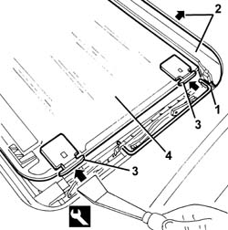

7030B28 sliding roof blind - r+r
- Path
- Procedures > 70 FITTINGS > 7030 SUN ROOF AND HOOD > 7030B sliding roof > 7030B28 sliding roof blind - r+r
- Kind
- repair procedure (removal / refitting; the operation number is the code)
- Applies to
- all engines; all production periods
- Interactive page
- https://sloeber94.github.io/elrnDB-a147/en/#/3025770
Applies to: all engines; all production periods
 Removing
Removing
 Refitting
Refitting7030B18 sliding roof glass - r+r
1. From both sides, disconnect the linkages.
2. Move the drainage channel backwards.
3. Using the special tool, press the curtain runners gently inwards and remove them from the guide.
 | Name | Country |
|---|---|---|
3 | Scraper blade | 1.823.014.000 |
4. Withdraw the curtain, releasing the runners on the opposite side.

Applies to: all engines; all production periods
Refitting
RemovingCheck that the blind is not damaged.
Fit the curtain runners on one side, then using the special tool, then press the runners on the other side gently inwards and fit them in their seating.
| Name | Country |
|---|---|---|
- | Scraper blade | 1.823.014.000 |
Move the drainage channel forwards and connect the linkages.
7030B18 sliding roof glass - r+r
Check that the blind and the sun roof work properly.